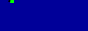
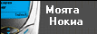

|





|
24
Юли, 2002
Музика:
Този
ъпдейт може би няма да е от най-легалните,
и затова новодобавеното ще остане
само в архива на новините и няма да
влезе в някоя от секциите на СлавиWeb.
Ако сте гледали шоуто снощи (23.07.2002),
Слави и компания изпяха две нови
песни. Днес ви предлагаме имено
тези две песни. Много се извиняваме,
че не знаем точните им имена, но
затова пък песните са на ниво и
определно ще станат хитове!
Предупреждаваме, че музикалните
файлове не са в .mp3 формат (няма и да
бъдат), а в .wma формат (96kbps). Приятно
теглене и слушане!
>> Слави,
Деси и Ку-Ку Бенд (втората изпята
песен преди вица)
>> Слави
и Ку-Ку Бенд (първата изпята песен в
първата половина на шоуто)
Slavishow.com:
Чудо на Чудесата!
СлавиWeb поздравява всички фенове на
Слави Трифонов с откриването на официалния сайт на предаването! Адреса е
www.slavishow.com.
Това беше официалната страна на съобщението. Сега по същество.
Фактите:
- страницата е пусната в обръщение в абсолютно неподготовен формат -
там можете да намерите единствено разлята на 5 страници история
със снимки, които трябва да разглеждате с лупа,
и дискография (забележка от екипа на СлавиWeb -
можеше и без копиране на снимковия
материал; за всички желаещи - направете
елементарно сравнение - отворете страниците 'Дискография' на
СлавиWeb и официалната страница)
- новина за всички яростни фенове - всички от екипа имат свои е-мейл адреси.
А самите членове знаят ли изобщо за тяхното съществуване? Как се гарантира,
че имено Годжи или Гъмзата ще отговарят на феновете... Предложение - драги
гости, пишете на тези адреси и споделяйте опита си.
- недоумение - може Слави да работи с най-добрите сценаристи и музиканти
в България, но от към компютърни
специалисти нещата явно куцат...
Никой професионално уважаващ себе
си web master (какъвто би трябвало да
бъде web master-а на официалния сайт на
шоуто) не би допуснал страницата да
стартира в такъв недовършен вид
(прекалено много секции с израза
"очаквайте скоро..."). Това за
"после" и за колелото не се
прави в интернет.
Нооо... официалният сайт на
"Шоуто на Слави Трифонов" все
още прохожда и не бива да го съдим
от рано. И... въпреки всичко
пожелаваме успешно развитие на
страницата и от сърце се надяваме
да стане това, което ни обещават
авторите. :)
P.S. И все пак, колко??? Скоро, по-скоро
или най-скоро? :-)))))))
23
Юли, 2002
Колажи с кадри:
Мишо
Шамара и Димитър Цонев (галерия 2). Натиснете
тук.
21
Юли, 2002
Колажи с кадри
и видео:
На 11
и 12 декември в далечната 1995 година
в Народния театър "Иван Вазов"
се се провежда концерт-промоция на
новия албум на Каналето "Жълта
Книжка". Коцерта е озаглавен "Джуджешка
мистерия" и авторите го описват
като една "феерия мистерия, една
история колкото джуджешка, толкова
човешка". Днес ви предлагаме 4
колажа с кадри от изпълненията на
Слави и самото изпълнение на "Малка
блудна жена". Натиснете тук
за колажите, а за клипа - тук.
17
Юли, 2002
Колажи с кадри:
В
"Снимки" ви очакват колажи с
кадри от гостуванията на Нети,
Филип Киркоров, Алсу и Кичка
Бодурова. Натиснете тук.
Снимки:
Продължаваме с добавянето на
снимки на Слави и компания:
>> Слави
: списание "Тема" - 4 снимки
>> Слави
: списание "Кой" - 2 снимки
>> Деси
: списание "Блясък" - 2 снимки
>> Евгени
: списание "Клуб М" - 1 снимка
11
Юли, 2002
Видео: Вече
имате възможност да изтеглите
целия клип към песента "Дулсинея".
Натиснете тук.
 Снимки:
Дълго се
чудехме на кого да добавим снимки
днес и най-накрая се спряхме на
Годжи! Общо 7 снимки на басиста може
да намерите в галерия, посветена на
Ку-Ку Бенд в секцията "Снимки".
Тези дни очаквайте снимки на
Йордан Йончев-Гъмзата от списание
"За Мен". Натиснете тук. Снимки:
Дълго се
чудехме на кого да добавим снимки
днес и най-накрая се спряхме на
Годжи! Общо 7 снимки на басиста може
да намерите в галерия, посветена на
Ку-Ку Бенд в секцията "Снимки".
Тези дни очаквайте снимки на
Йордан Йончев-Гъмзата от списание
"За Мен". Натиснете тук.
19
Юни, 2002
  Колаж
с кадри:
Е,
това май е една доста голяма и
неочаквана изненада. Познахте ли
от къде са тези две снимки на
младия Слави? Тези, които са фенове
на Слави от самото начало веднага
са познали, че това са снимки от
клипа към песента "Дулсинея"
от албума "Шат на патката
главата". Днес ви предлагаме
само колаж с кадри от клипа, но
много скоро ще имате и
възможността да изтеглите целия
клип. Колаж
с кадри:
Е,
това май е една доста голяма и
неочаквана изненада. Познахте ли
от къде са тези две снимки на
младия Слави? Тези, които са фенове
на Слави от самото начало веднага
са познали, че това са снимки от
клипа към песента "Дулсинея"
от албума "Шат на патката
главата". Днес ви предлагаме
само колаж с кадри от клипа, но
много скоро ще имате и
възможността да изтеглите целия
клип.
Натиснете
тук за колажа с кадри. (14 малки
снимки; 138KB)
15
Юни, 2002
 Снимки:
Нови
снимки бяха добавени в следните
галерии. Очаквайте още! Снимки:
Нови
снимки бяха добавени в следните
галерии. Очаквайте още!
>> Слави
: Разни - 3 снимки
>> Галя
: вестник "Труд" - 2 снимки
>> Нов
Фолк Експрес - 4 снимки
14
Юни, 2002
"Шоуто
на Слави Трифонов" - българската
победа на медийния пазар!
"Шоуто на Слави Трифонов"
премина успешно полуфинала за
най-престижните световни
телевизионни програми "Еми".
Гласуването се проведе по време на
международния фестивал
"Телевизионен свят" в Албена и
журито избра за финалист
предаването с участието на
Жан-Клод Ван Дам. Финалистите са
общо осем и ще се състезават през
септември в Лос Анджелис. Сред тях
ще бъдат избрани три, сред които и
ще бъде оповестен победителя в
категория "Забавни програми"
през октомври на телевизионния
пазар в Кан. На нас ни остава
единствено на стискаме палци за
Слави и компания. Самият факт, че
българско предаване е било оценено
толкова високо и получава шанса да
се бори за подобно звание е повод
за радост и национална гордост.
Надяваме се, естествено, Слави да
победи. Но и даже това да не се
случи - за "Шоуто на Слави" ще
знаят вече не само у нас, но и по
света.
9
Юни, 2002
Награди:
"Шоуто на
Слави Трифонов" получи
наградата за ток шоу на
Международните медийни събития
"Телевизионен свят 2002" в
Албена.
Шоуто е номинирано и за
престижната международна награда
"Еми".
Текст и снимка: bTV.bg
8
Юни, 2002
 Видео:
Помните ли
специалното шоу на Слави Трифонов
за 3 март тази година? А може би
помните песните, които той,
Александра и Десислава изпяха
заедно. Днес ви предлагаме едно от
четирите изпълнения: Видео:
Помните ли
специалното шоу на Слави Трифонов
за 3 март тази година? А може би
помните песните, които той,
Александра и Десислава изпяха
заедно. Днес ви предлагаме едно от
четирите изпълнения:
>> Слави
и Ку-Ку Бенд - Пустите Клисурци
Приятно
теглене!
7
Юни, 2002
Update:
"Видео"
секцията е вече изцяло готова,
очаквайте много нови клипове! Ако
имате някакви желания, пишете
ни!
4 Юни, 2002
Книга
за гости: Кажете
ни какво мислите за СлавиWeb,
споделете колко много обичате или
мразите Слави, питайте ни нещо...
или просто се подпишете в новата
книга за гости на СлавиWeb!
Натиснете тук.
30 Май, 2002
СлавиWeb
v2.0: Добре
дошли отново на СлавиWeb!
Приветстваме Ви фенове на Слави
Трифонов и Co! СлавиWeb се завръща с
нов дизайн и е готов отново да ви
информира и очарова. Надяваме се
нашият труд да бъде удостоверен с
вашето внимание и топъл прием!
Страницата е с изцяло променена
структура, и все още не всички
секции са готови. Надяваме се до
няколко дни всичко да е готово.
Много изненади ви очакват! През
всичкото това време, през което ни
нямаше, ние не бяхме заети само с
дизайна на страницата... Но,
посещавайте ни редовно и ще
разберете за какво става въпрос!
За всички, които дочакаха този
паметен момент - добре дошли!
|